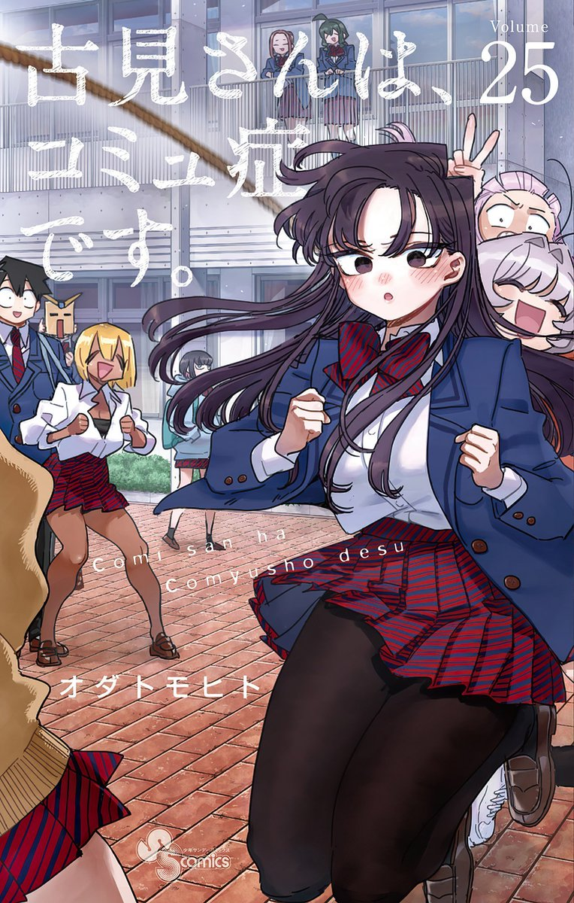

komi can't communicate
A jornada de Komi-san para fazer 100 amigos está entrando em sua reta final! O volume 25 marca o início do terceiro e último ano do colegial para Shouko Komi, Hitohito Tadano e Najimi Osana. Apesar da felicidade de Komi-san e Tadano-kun estarem na mesma Turma 1 novamente (junto com a caótica Najimi), a nova separação dos amigos da Turma 1-2 (incluindo Manbagi-san) traz um começo levemente agridoce e preocupante para a nossa heroína. O tempo está correndo, e o desafio de se comunicar continua tão grande quanto o desejo de Komi-san de aproveitar seu último ano.
Preço: R$ 40.00